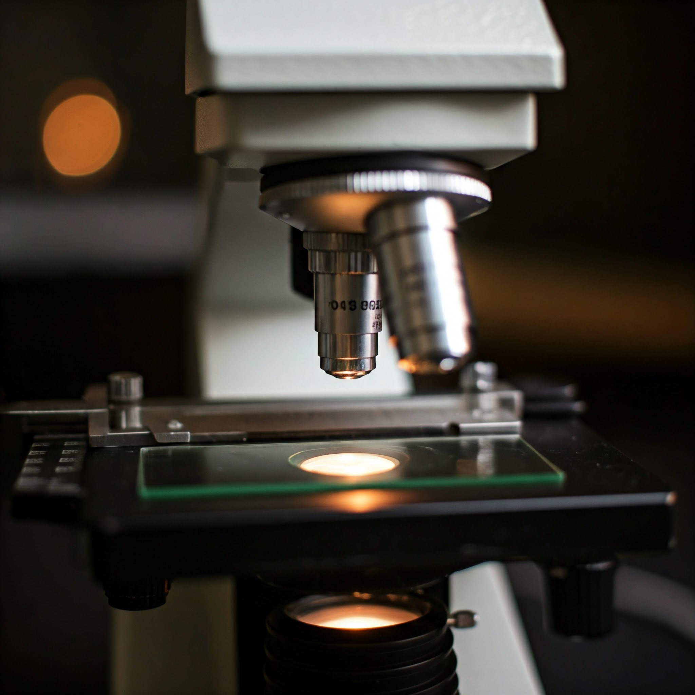
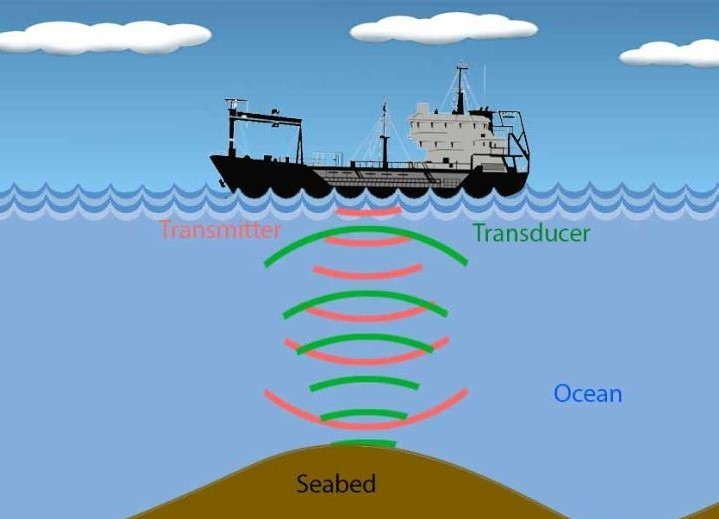
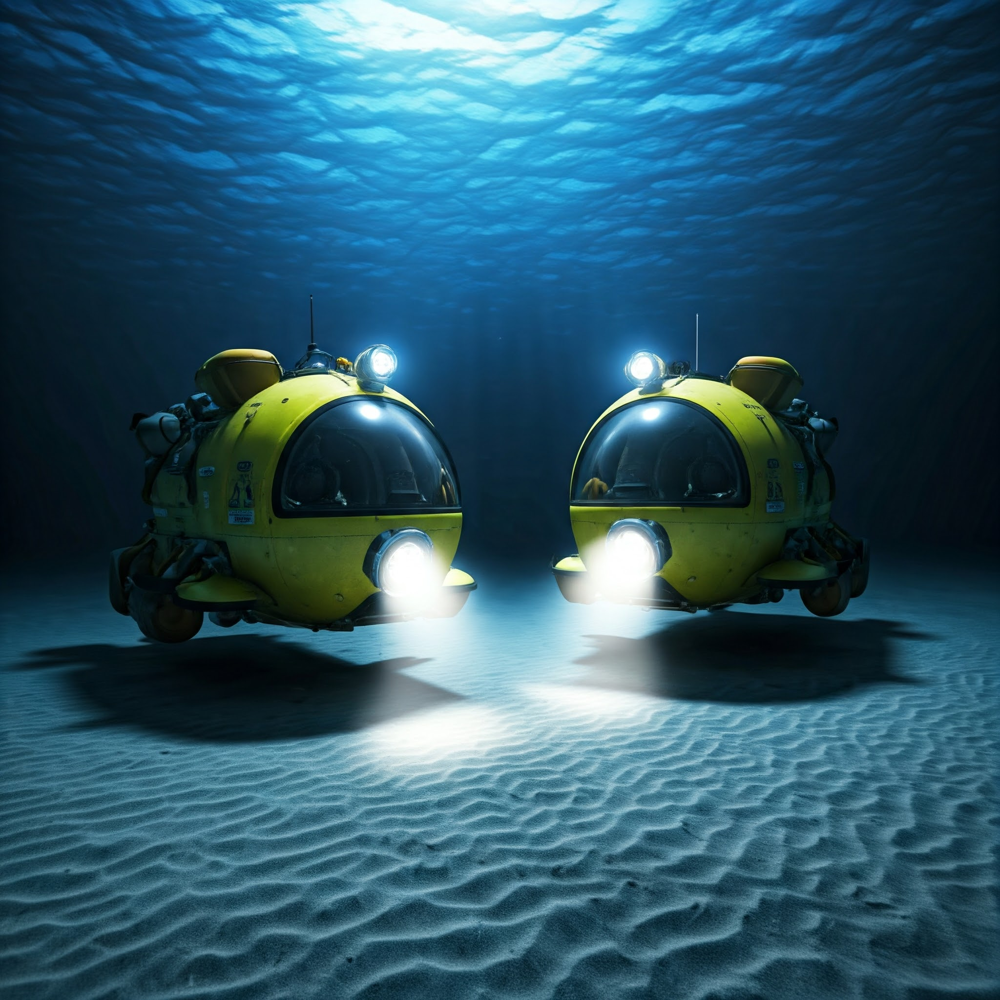
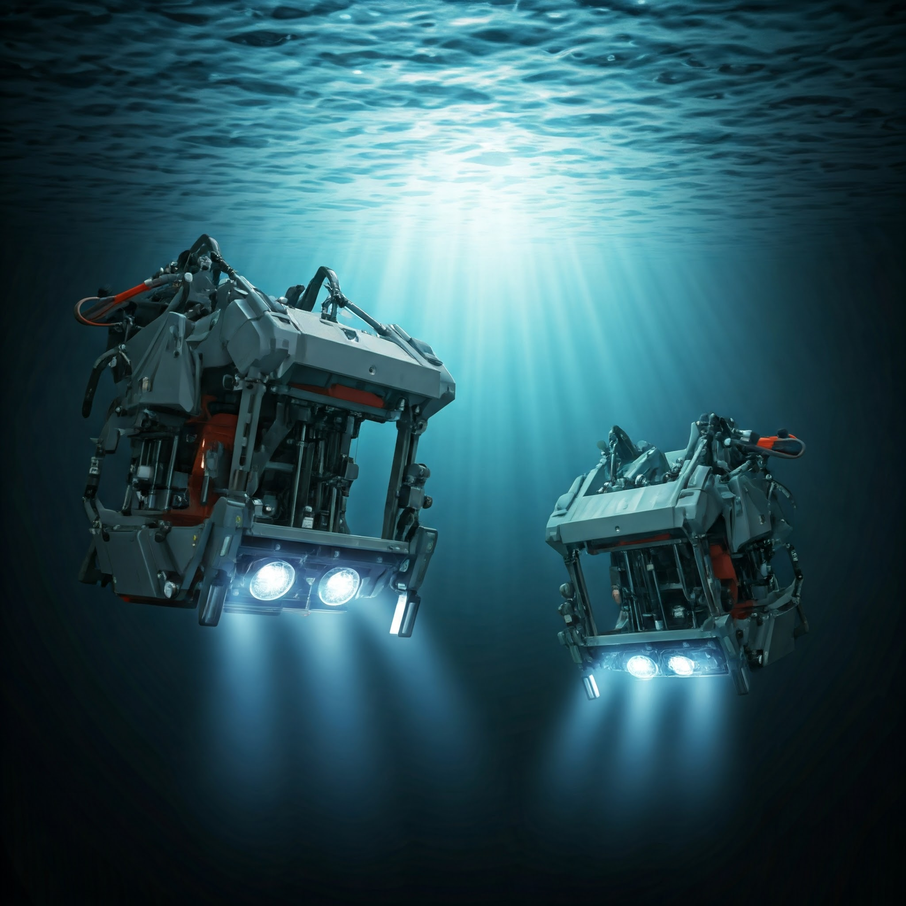
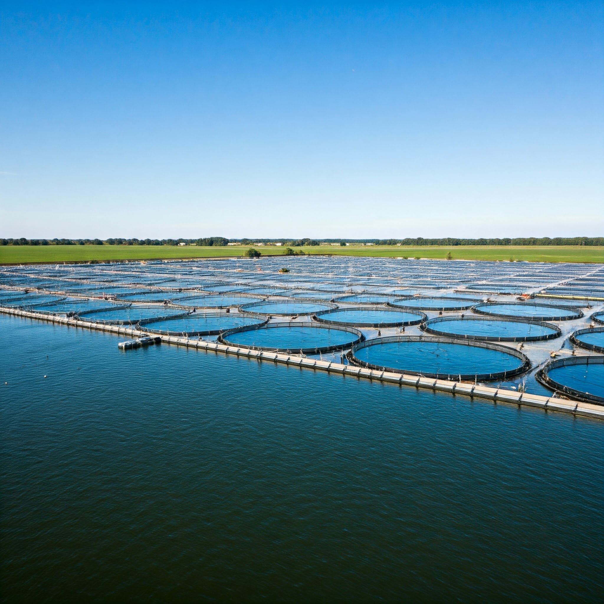

1. Microscope
- Discovery: Allowed scientists to see tiny marine organisms like plankton.
- Impact: Enabled the study of microscopic life forms, essential for understanding ecosystems.

2. Sonar
- Discovery: Uses sound waves to detect objects underwater.
- Impact: Helped map the ocean floor and locate schools of fish, revolutionizing marine exploration.

3. Submersibles
- Discovery: Vehicles designed to explore deep-sea environments.
- Impact: Provided direct observation and sampling of marine life in extreme conditions.

4. Remote Operated Vehicles (ROVs)
- Discovery: Unmanned, remotely controlled underwater robots.
- Impact: Allowed scientists to explore deep oceans without risking human lives.

5.Satellite Technology
- Discovery: Satellites monitor ocean temperatures, currents, and health.
- Impact: Improved understanding of global climate change and marine ecosystems.

6. Aquaculture Techniques
- Discovery: Methods for farming fish and shellfish.
- Impact: Helped meet seafood demands sustainably and study aquatic species in controlled environments.

7. DNA Sequencing
- Discovery: Analyzing genetic material from marine organisms.
- Impact: Enhanced understanding of biodiversity and evolutionary relationships among species.

8. Environmental Monitoring Equipment
- Discovery: Tools that measure water quality, temperature, and pollutants.
- Impact: Helped track the health of marine ecosystems and the impact of human activity.